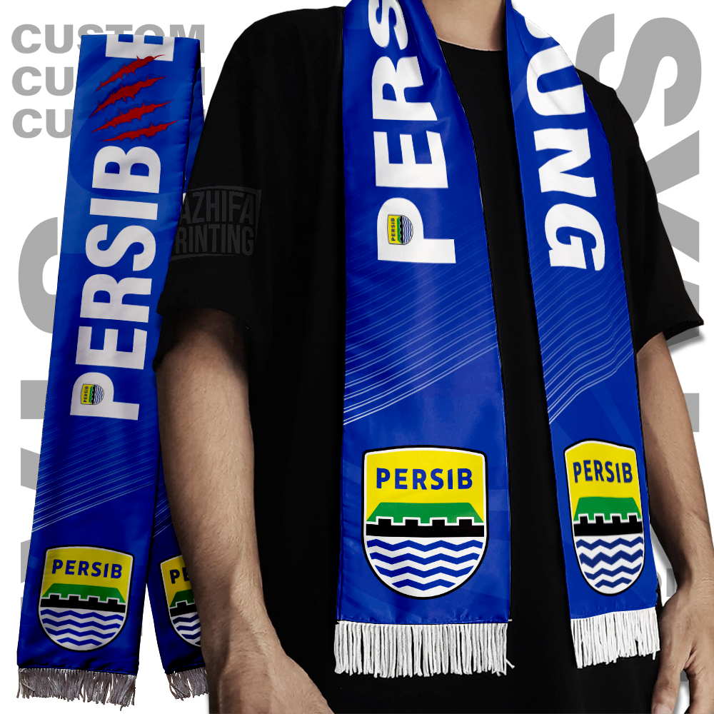

Syal Persib
Syal supporter resmi Persib
Rp 129.000Syal Persib ini cocok untuk menambah semangat saat mendukung tim di stadion maupun di luar stadion.
- Bahan rajut lembut
- Motif warna biru Persib
- Panjang ideal untuk dipakai di musim dingin
- Cocok sebagai koleksi merchandise